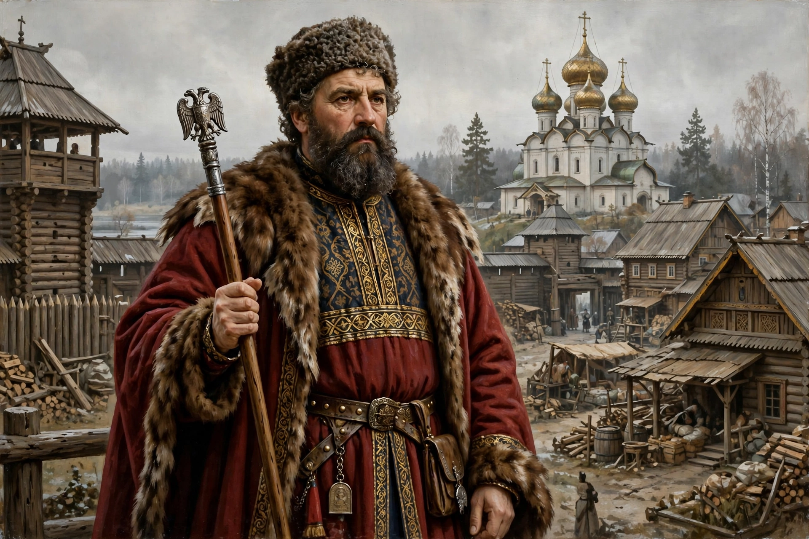

A posadnik (Russian: посадник) was the mayor in some East Slavic cities or towns, especially Novgorod and Pskov. Historically, the term derives from the Old Slavonic posaditi, because the prince in Kievan Rus' originally appointed a representative to rule in his place.
In the Novgorod Republic, the posadnik was elected by the veche from among the boyars, rather than appointed by the prince. Several posadniks were elected at once in later centuries. The office coexisted with the tysyatsky and the Archbishop of Novgorod. Famous posadniks include Gostomysl (legendary), Ostromir, and Dobrynya.
The office was abolished when Ivan III annexed Novgorod in 1478.
In Pskov, 78 posadniks are known in the 14th–15th centuries. The office ended with annexation by Moscow in 1510 under Vasily III.
See also: Novgorod Republic, Veche